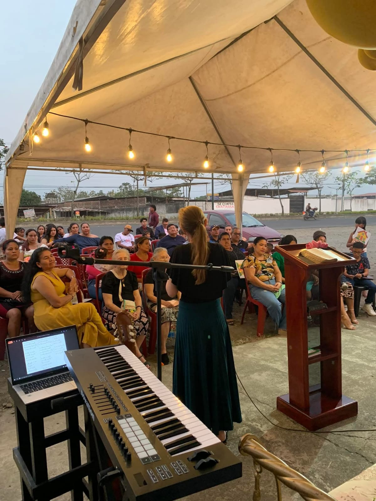
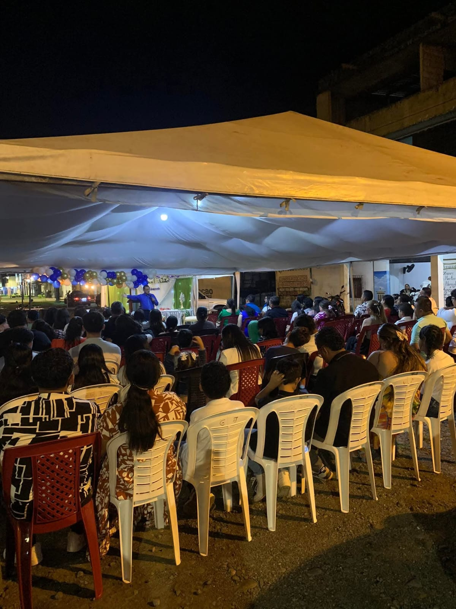
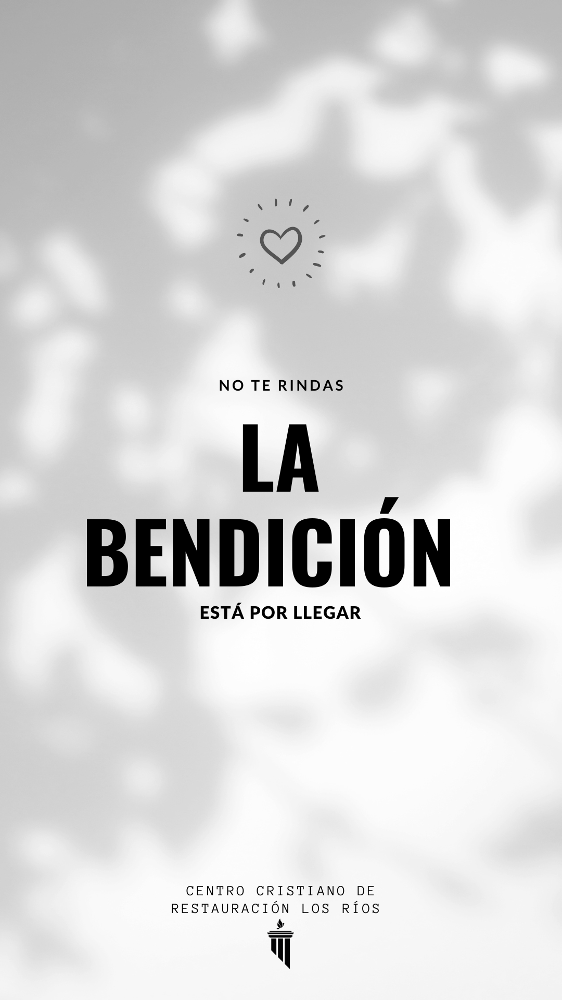
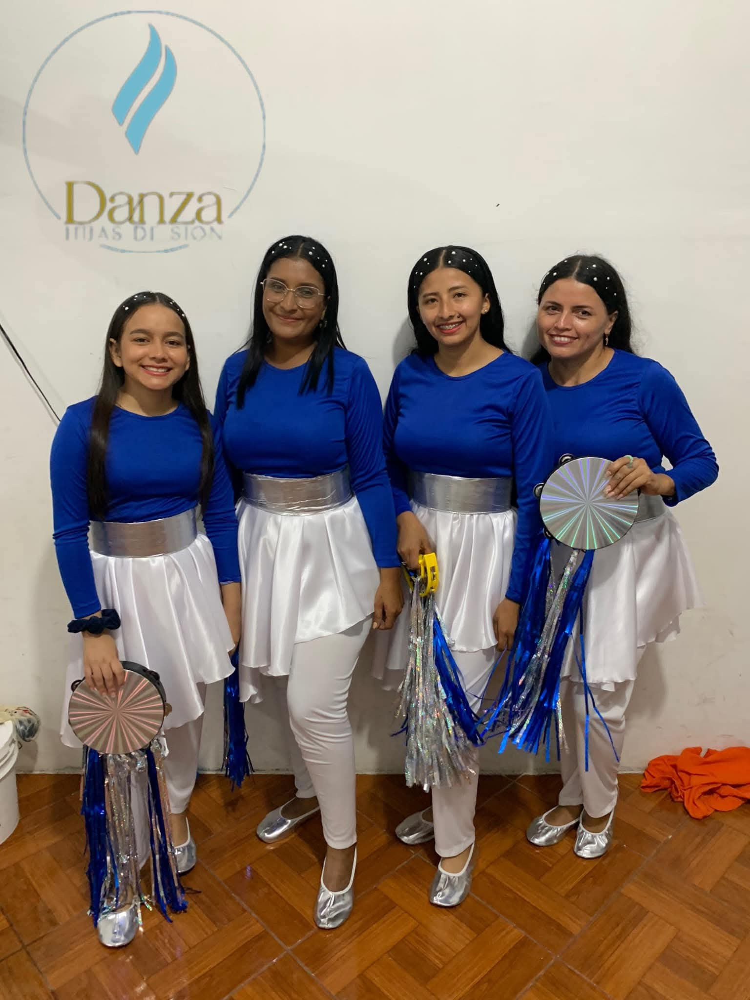
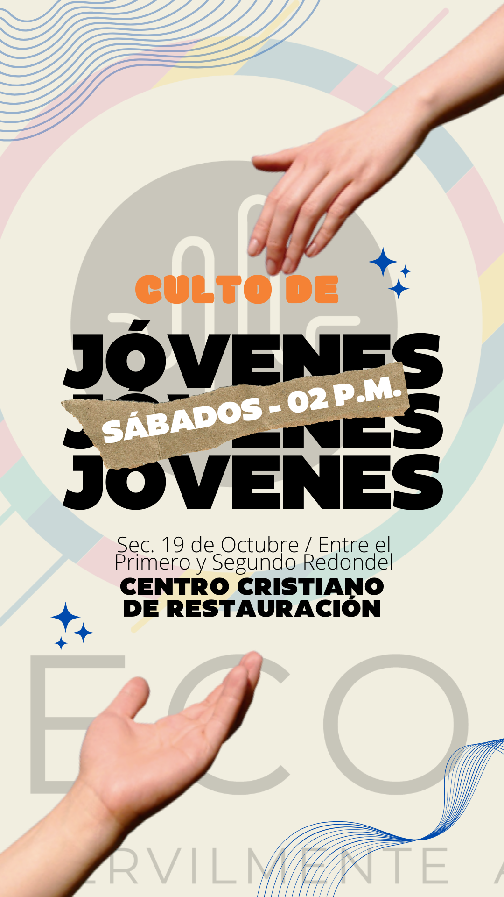
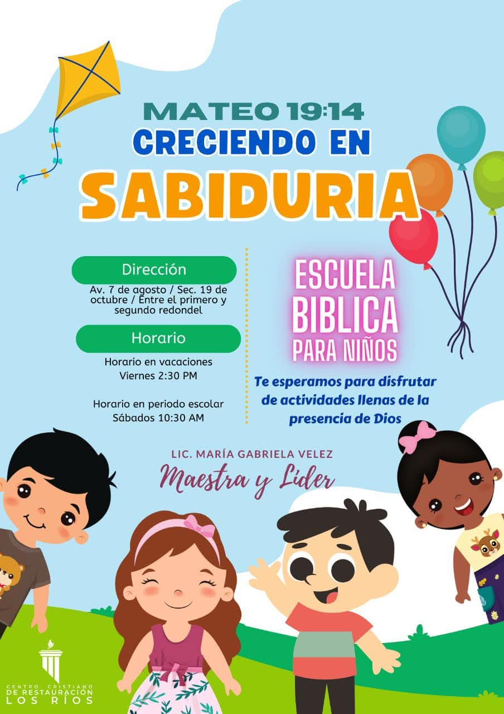
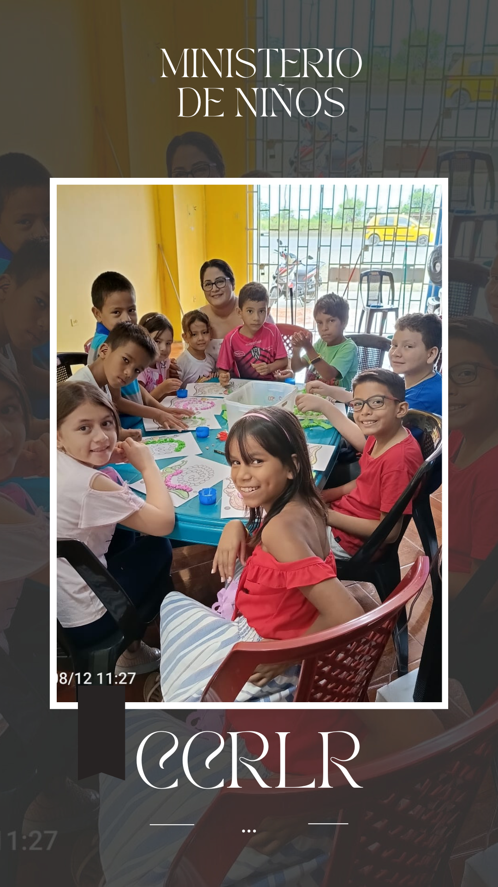
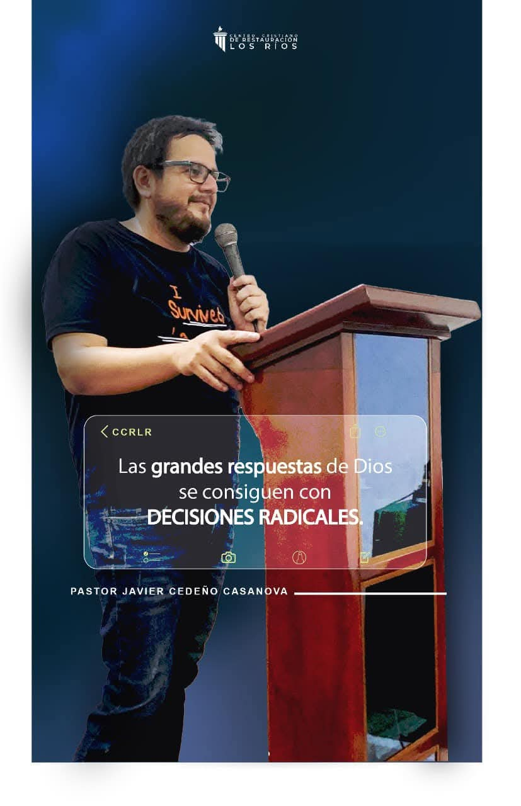
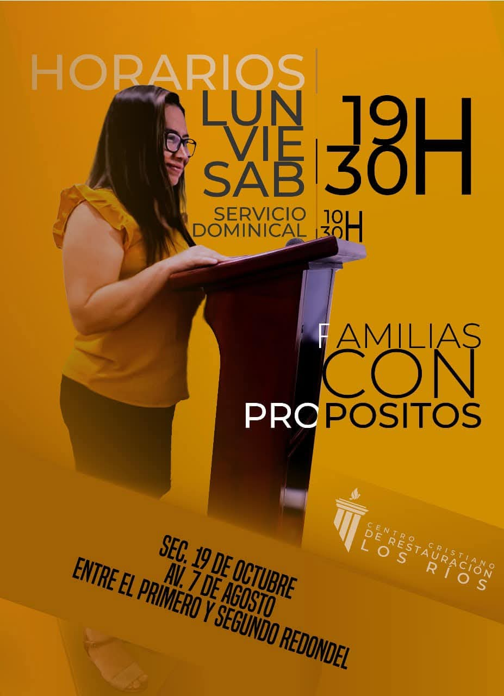
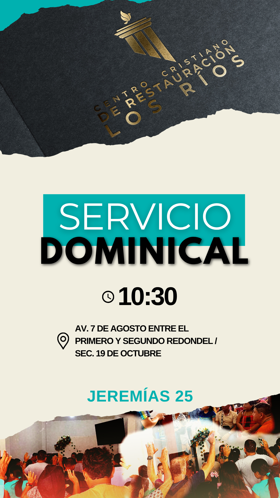

Bienvenidos
Bienvenidos al sitio oficial de nuestra iglesia. Aquí encontrarás recursos y un espacio para la comunidad.











Nuestros Recursos
Plan de Evangelización
Consulta nuestro plan de evangelización directamente aquí:
Ver Plan de EvangelizaciónLectura de Libros (PDF)
Aquí podrás encontrar y leer libros en formato PDF. Haz clic en el título para abrir el libro.
Guía de Discipulado
Descubre nuestra guía de discipulado para tu crecimiento espiritual.
Descargar Guía de Discipulado (PDF)